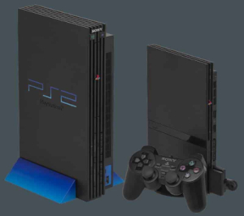
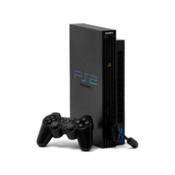
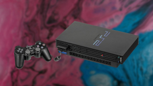

PlayStation 2 Quando o Playstation 2 chegou às lojas, no fim de 2000, a promessa era de um grande avanço e uma revolução na forma como os jogadores se relacionavam com seus consoles. Além de rodar filmes em DVDs, se tornando o “centro” da sala, o console iria inaugurar a era on-line. Mas a verdade é que o PS2 acabou se destacando mesmo naquilo em que foi criado para fazer: rodar jogos. E fez isso como nenhum outro.  Com a chamada “geração 128 bits”, a Sony tinha como desafio manter a liderança que alcançou com o PSOne, e para isso investiu em uma série de jogos exclusivos, como as séries Final Fantasy, Tomb Raider e Gran Turismo, além de nomes fortes como GTA, Winning Eleven (atual Pro Evolution Soccer) e a série esportiva da EA. A verdade é que logo nos primeiros anos, a liderança da Sony no mercado já estava consolidada. Com o Xbox da Microsoft tendo dificuldade em atrair jogos exclusivos e com o Gamecube se mostrando um claro erro cálculo da Nintendo (para ser gentil), a principal concorrência do PS2 eram os próprios PCs. No Brasil, o console também foi de longe o mais popular e, para isso, contou uma ajuda inesperada: a pirataria. O Playstation 2 foi a era de ouro para o comércio de jogos piratas no país. Em cidades como São Paulo, era possível encontrar bancas vendendo jogos à 5 ou 10 reais em cada esquina. Foi esta mesma facilidade que fez com que o console se tornasse um grande sucesso em outros mercados emergentes, como México, Índia e China. Mas creditar todo o sucesso do console à facilidade para desbloquear seu sistema seria uma injustiça. Durante boa parte dos últimos três anos, o PS2 vendeu mais no Japão que o Xbox 360, e até hoje jogos continuam sendo lançados para ele (PES 2013 foi oficialmente o último jogo da série lançado para o sistema). Com mais de 150 milhões de unidades vendidas, o PS2 está no Guiness Book (Livro dos Recordes) como o console mais vendido de todos os tempos. Versões Do Ps2  Os casos de defeito no PlayStation 2 Fat eram menos frequentes, apesar de algumas unidades de lançamento terem apresentado problemas. Porém, o maior motivo para uma revisão é que o console custava caro para a Sony, que o subsidiava para manter o preço acessível. Mesmo com a liderança isolada, a empresa ainda não lucrava tanto quanto concorrentes como a Nintendo, que então amargava péssimas vendas do GameCube.  O PlayStation 2 Slim, também conhecido como Ps2, resolveu esse problema com características semelhantes ao PSone em 2004. Ficou menor, mais leve, e trocou a bandeja por uma tampa simples. O console perdeu também a compatibilidade com o HD externo e, consequentemente, o MMORPG Final Fantasy 11, mas isso não atrapalhou seu grande sucesso.